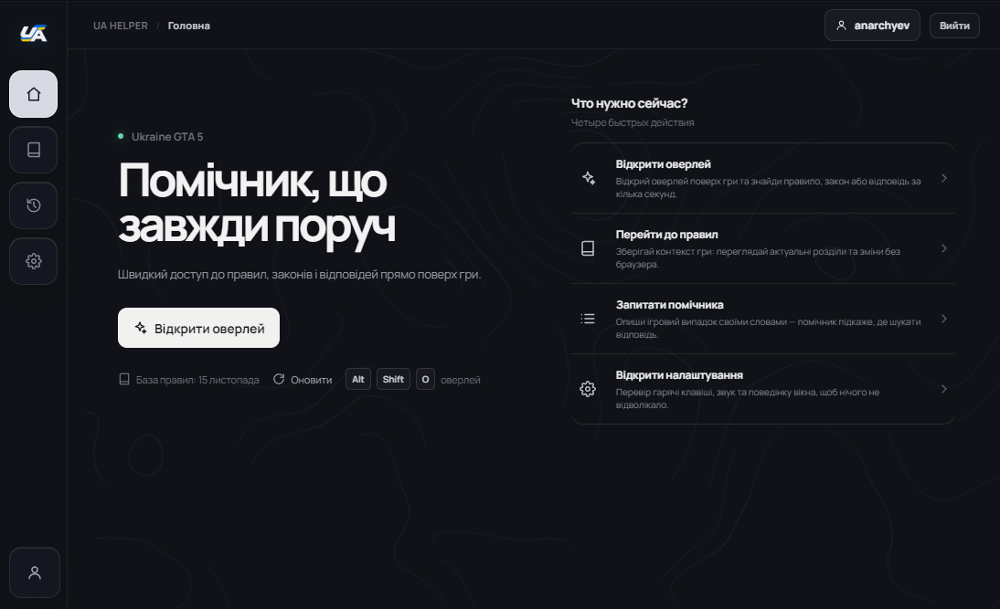
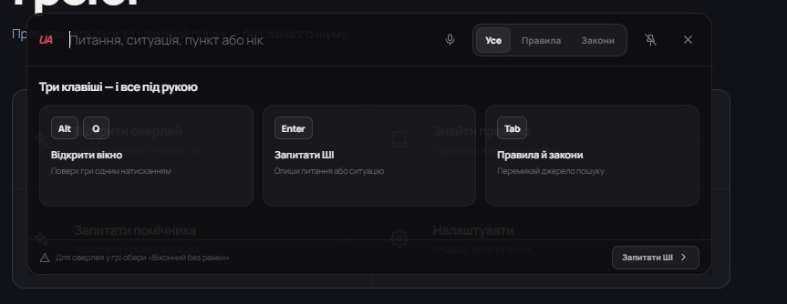
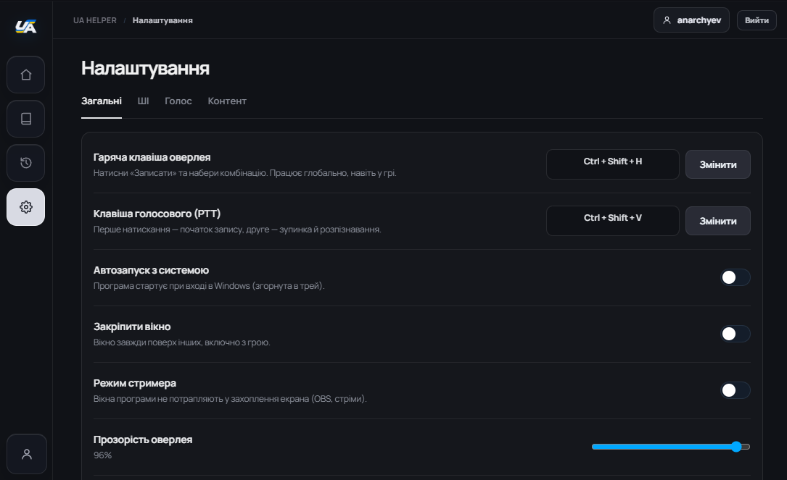

Неофіційний помічник для Ukraine GTA 5
Правила поруч.Рішення за секунди.
UA Helper відкриває правила, закони та відповіді помічника поверх гри. Описуєш ситуацію своїми словами — отримуєш відповідь і джерело.

01Можливості
Усе потрібне — не виходячи з гри.
Один інструмент замість браузера, нотаток і пошуку по чатах.
Оверлей поверх гри
Відкривається однією комбінацією клавіш. Вікно можна закріпити поверх усіх і налаштувати його прозорість.
Питання своїми словами
Опиши ігровий випадок як є. Помічник підкаже, де шукати відповідь, і покаже джерело.
Голосовий ввід
Окрема клавіша для голосу: перше натискання починає запис, друге зупиняє й розпізнає.
Правила й закони
Клавіша Tab перемикає джерело пошуку: усе одразу, лише правила або лише закони.
Зміни правил
Кожна зміна з датою, номером пункту та підсвіткою: що додали, що прибрали.
Режим стримера
Вікна програми не потрапляють у захоплення екрана, тож OBS і стрім їх не бачать.
02Скріншоти
Як це виглядає.
Одна клавіша — і вікно поверх гри.
Пиши або говори запит, перемикай правила та закони через Tab, а Enter відправляє питання помічнику.
Щоб оверлей показувався в грі, обери режим «Віконний без рамки».

Правила оновили — видно що саме.
Журнал змін показує дату, номер пункту й тип зміни. У тексті підсвічено різницю: червоне прибрали, зелене додали.

Налаштуй під себе.

03Приклад
Питаєш так, як сказав би другу.
Жодних номерів пунктів напам'ять: описуєш ситуацію, отримуєш відповідь і джерело, яке можна перевірити.
Демонстраційні відповіді для показу інтерфейсу, не фактичні правила сервера.
04Що варто знати
Коротко про довіру.
Окреме вікно
UA Helper відкривається як окреме вікно поверх гри, а не вбудовується в неї.
Telegram — лише вхід
Використовується для підтвердження профілю та входу в застосунок.
Одне джерело завантаження
Посилання на збірку буде тільки на цій сторінці й у Telegram-каналі, з версією та датою.
Дізнайся першим, коли UA Helper вийде.
Новини, збірки та оновлення правил — у Telegram-каналі. Тут з'явиться пряме посилання на Windows-версію.
05Питання
Коротко про застосунок.
Що таке UA Helper?
Оверлей для Windows, який відкриває правила, закони та підказки поверх гри в Ukraine GTA 5. Проєкт неофіційний і створений гравцями для гравців.
Чи потрібно закривати гру?
Ні. Помічник відкривається поверх гри через гарячу клавішу. Для коректного відображення обери в налаштуваннях гри режим «Віконний без рамки».
Яка гаряча клавіша?
Ту, яку задаси сам, у «Налаштування → Загальні». Вона працює глобально, навіть у грі. Окрему клавішу можна призначити й для голосового вводу.
Як знайти потрібне правило?
Введи номер пункту, ключове слово або опиши ситуацію своїми словами, текстом чи голосом. Tab перемикає пошук між правилами та законами.
Навіщо потрібен Telegram?
Лише для підтвердження профілю та входу в застосунок.
Чи видно програму на стрімі?
Увімкни «Режим стримера» в налаштуваннях: вікна програми не потраплять у захоплення екрана, зокрема в OBS.
Скільки це коштує?
На етапі бета-тесту застосунок безкоштовний. Якщо умови зміняться, ми повідомимо заздалегідь в Telegram-каналі.